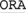
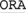
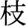
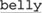
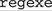
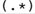
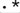
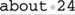

4.2. Match Basics
Before looking at the differences among these engine types, let's first look at their similarities. Certain aspects of the drive train are the same (or for all practical purposes appear to be the same), so these examples can cover all engine types.
4.2.1. About the Examples
This chapter is primarily concerned with a generic, full-function regex engine, so some tools won't support exactly everything presented. In my examples, the dipstick might be to the left of the oil filter, while under your hood it might be behind the distributor cap. Your goal is to understand the concepts so that you can drive and maintain your favorite regex package (and ones you find interest in later).
I'll continue to use Perl's notation for most of the examples, although I'll occasionally show others to remind you that the notation is superficial and that the issues under discussion transcend any one tool or flavor. To cut down on wordiness here, I'll rely on you to check Chapter 3 (☞ 114) if I use an unfamiliar construct.
This chapter details the practical effects of how a match is carried out. It would be nice if everything could be distilled down to a few simple rules that could be memorized without needing to understand what is going on. Unfortunately, that's not the case. In fact, with all this chapter offers, I identify only two all-encompassing rules:
We'll look at these rules, their effects, and much more throughout this chapter. Let's start by diving into the details of the first rule.
4.2.2. Rule 1: The Match That Begins Earliest Wins
This rule says that any match that begins earlier (leftmost) in the string is always preferred over any plausible match that begins later. This rule doesn't say anything about how long the winning match might be (we'll get into that shortly), merely that among all the matches possible anywhere in the string, the one that begins leftmost in the string is chosen. Actually, since more than one plausible match can start at the same earliest point, perhaps the rule should read "a match..." instead of "the match...," but that sounds odd.
Here's how the rule comes about: the match is first attempted at the very beginning of the string to be searched (just before the first character). "Attempted" means that every permutation of the entire (perhaps complex) regex is tested starting right at that spot. If all possibilities are exhausted and a match is not found, the complete expression is re-tried starting from just before the second character. This full retry occurs at each position in the string until a match is found. A "no match" result is reported only if no match is found after the full retry has been attempted at each position all the way to the end of the string (just after the last character).
Thus, when trying to match  ORA ORA against FLORAL, the first attempt at the start of the string fails (since ORA can't match FLO). The attempt starting at the second character also fails (it doesn't match LOR either). The attempt starting at the third position, however, does match, so the engine stops and reports the match: FLL. against FLORAL, the first attempt at the start of the string fails (since ORA can't match FLO). The attempt starting at the second character also fails (it doesn't match LOR either). The attempt starting at the third position, however, does match, so the engine stops and reports the match: FLL.
If you didn't know this rule, results might sometimes surprise you. For example, when matching cat against
The dragging belly indicates your cat is too fat
the match is in indi es, not at the word cat that appears later in the line. This word cat could match, but the cat in indicates appears earlier in the string, so it is the one matched. For an application like egrep, the distinction is irrelevant because it cares only whether there is a match, not where the match might be. For other uses, such as with a search and replace, the distinction becomes paramount. es, not at the word cat that appears later in the line. This word cat could match, but the cat in indicates appears earlier in the string, so it is the one matched. For an application like egrep, the distinction is irrelevant because it cares only whether there is a match, not where the match might be. For other uses, such as with a search and replace, the distinction becomes paramount.
Here's a (hopefully simple) quiz: where does fat|cat|belly|your match in the string 'The dragging belly indicates your cat is too fat'? ❖ Turn the page to check your answer.
4.2.2.1. The "transmission" and the bump-along
It might help to think of this rule as the car's transmission, connecting the engine to the drive train while adjusting for the gear you're in. The engine itself does the real work (turning the crank); the transmission transfers this work to the wheels.
4.2.2.2. The transmission's main work: the bump-along
If the engine can't find a match starting at the beginning of the string, it's the transmission that bumps the regex engine along to attempt a match at the next position in the string, and the next, and the next, and so on. Usually. For instance, if a regex begins with a start-of-string anchor, the transmission can realize that any bump-along would be futile, for only the attempt at the start of the string could possibly be successful. This and other internal optimizations are discussed in Chapter 6.
4.2.3. Engine Pieces and Parts
An engine is made up of parts of various types and sizes. You can't possibly hope to truly understand how the whole thing works if you don't know much about the individual parts. In a regex, these parts are the individual unitsliteral characters, quantifiers (star and friends), character classes, parentheses, and so on, as described in Chapter 3 (☞ 114). The combination of these parts (and the engine's treatment of them) makes a regex what it is, so looking at ways they can be combined and how they interact is our primary interest. First, let's take a look at some of the individual parts:
Literal text (e.g., a \* !  ... ) With a literal, non-metacharacter like z or !, the match attempt is simply "Does this literal character match the current text character?" If your regex is only literal text,
such as "usa, it is treated as "u and then s and then a." It's a bit more complicated if you have the engine do a case-insensitive match, where b matches B and vice-versa, but it's still pretty straightforward. (With Unicode, there are a few additional twists ☞ 110.)
Character classes, dot, Unicode properties, and the like Matching dot, character classes, Unicode properties, and the like (☞ 118) is usually a simple matter: regardless of the length of the character class, it still matches just one character.
Dot is just a shorthand for a large character class that matches almost any character (☞ 111), so its actions are simple, as are the other shorthand conveniences such as \w, \W, and \d.
Capturing parentheses Parentheses used only for capturing text (as opposed to those used for grouping) don't change how the match is carried out.
|
❖ Answer to the question on page 148.
Remember, the regex is tried completely each time, so fat|cat|belly|your matches 'The dragging  indicates your cat is too fat' rather than fat, even though fat" is listed first among the alternatives.
Sure, the regex could conceivably match fat and the other alternatives, but since they are not the earliest possible match (the match starting furthest to the left), they are not the one chosen. The entire regex is attempted completely from one spot before moving along the string to try again from the next spot, and in this case that means trying each alternative fat, cat, belly, and your at each position before moving on.
|
Anchors (e.g., ^ \Z (?<=\d) ... ) There are two basic types of anchors:
simple ones (^, $, \G, \b, ... ☞ 129) and complex ones (lookahead and lookbehind ☞ 133). The simple ones are indeed simple in that they test either the quality of a particular location in the target string (^, \Z, ...), or compare two adjacent characters (\<, \b, ...). On the other hand, the lookaround constructs can contain arbitrary sub-expressions, and so can be arbitrarily complex.
4.2.3.1. No "electric" parentheses, backreferences, or lazy quantifiers
I'd like to concentrate here on the similarities among the engines, but as foreshadowing of what's to come in this chapter, I'll point out a few interesting differences. Capturing parentheses (and the associated backreferences and $1 type functionality) are like a gas additivethey
affect a gasoline (NFA) engine, but are irrelevant to an electric (DFA)
engine. The same thing applies to lazy quantifiers. The way a DFA engine works completely precludes these concepts. This explains why tools developed with DFAs don't provide these features. You'll notice that awk, lex, and egrep don't have backreferences or any $1 type functionality.
You might, however, notice that GNU's version of egrep does support backreferences. It does so by having two complete engines under the hood! It first uses a DFA engine to see whether a match is likely, and then uses an NFA engine (which supports the full flavor, including backreferences) to confirm the match. Later in this chapter, we'll see why a DFA engine can't deal with backreferences or capturing, and why anyone ever would want to use such an engine at all. (It has some major advantages, such as being able to match very quickly.)
4.2.4. Rule 2: The Standard Quantifiers Are Greedy
So far, we have seen features that are quite straightforward. They are also rather boringyou can't do much without involving more-powerful metacharacters such as star, plus, alternation, and so on. Their added power requires more information to understand them fully.
First, you need to know that the standard quantifiers (?, *, +, and {min,max}) are greedy. When one of these governs a subexpression, such as a in a?, the (expr) in (expr)*, or [0-9] in [0-9]+, there is a minimum number of matches that are required before it can be considered successful, and a maximum number that it will ever attempt to match. This has been mentioned in earlier chapterswhat's new here concerns the rule that they always attempt to match as much as possible. (Some flavors provide other types of quantifiers, but this section is concerned only with the standard, greedy ones.)
To be clear, the standard quantifiers settle for something less than the maximum number of allowed matches if they have to, but they always attempt to match as many times as they can, up to that maximum allowed. The only time they settle for anything less than their maximum allowed is when matching too much ends up causing some later part of the regex to fail. A simple example is using \b\w+s\b to match words ending with an 's', such as 'regexes'. The \w+ alone is happy to match the entire word, but if it does, it leaves nothing for the s to match. To achieve the overall match, the \w+ must settle for matching only 's', thereby allowing s\b (and thus the full regex) to match.
If it turns out that the only way the rest of the regex can succeed is when the greedy construct in question matches nothing, well, that's perfectly fine, if zero matches are allowed (as with star, question, and {0, max} intervals). However, it turns out this way only if the requirements of some later subexpression force the issue. It's because the greedy quantifiers always (or, at least, try to) take more than they minimally need that they are called greedy.
Greediness has many useful (but sometimes troublesome) implications. It explains, for example, why [0-9]+ matches the full number in March•1998. Once the '1' has been matched, the plus has fulfilled its minimum requirement, but it's greedy, so it doesn't stop. So, it continues, and matches the '998' before being forced to stop by the end of the string. (Since [0-9] can't match the nothingness at the end of the string, the plus finally stops.)
4.2.4.1. A subjective example
Of course, this method of grabbing things is useful for more than just numbers. Let's say you have a line from an email header and want to check whether it is the subject line. As we saw in earlier chapters (☞ 55), you simply use ^Subject:.
However, if you use ^Subject:•, you can later access the text of the subject itself via the tool's after-the-fact parenthesis memory (for example, $1 in Perl).
Before looking at why .*
matches the entire subject, be sure to understand that once the ^Subject: • part matches, you're guaranteed that the entire regular expression will eventually match. You know this because there's nothing after ^Subject: • that could cause the expression to fail; .* can never fail, since the worst case of "no matches" is still considered successful for star.
So, why do we even bother adding .*? Well, we know that because star is greedy, it attempts to match dot as many times as possible, so we use it to "fill" $1. In fact, the parentheses add nothing to the logic of what the regular expression matchesin this case we use them simply to capture the text matched by .*.
Once .* hits the end of the string, the dot isn't able to match, so the star finally stops and lets the next item in the regular expression attempt to match (for even though the starred dot could match no further, perhaps a subexpression later in the regex could). Ah, but since it turns out that there is no next item, we reach the end of the regex and we know that we have a successful match.
4.2.4.2. Being too greedy
Let's get back to the concept of a greedy quantifier being as greedy as it can be. Consider how the matching and results would change if we add another .*: ^Subject:•(.*). The answer is: nothing would change. The initial .* (inside the parentheses) is so greedy that it matches all the subject text, never leaving anything for the second .* to match. Again, the failure of the second .* to match something is not a problem, since the star does not require a match to be successful. Were the second .* in parentheses as well, the resulting $2 would always be empty.
Does this mean that after .*, a regular expression can never have anything that is expected to actually match? No, of course not. As we saw with the \w+s example, it is possible for something later in the regex to force something previously greedy to give back (that is, relinquish or conceptually "unmatch")
if that's what is necessary to achieve an overall match.
Let's consider the possibly useful ^.*([0-9][0-9]), which finds the last two digits on a line, wherever they might be, and saves them to $1. Here's how it works: at first, .* matches the entire line. Because the following ([0-9][0-9]) is required, its initial failure to match at the end of the line, in effect, tells .* "Hey, you took too much! Give me back something so that I can have a chance to match." Greedy components first try to take as much as they can, but they always defer to the greater need to achieve an overall match. They're just stubborn about it, and only do so when forced. Of course, they'll never give up something that hadn't been optional in the first place, such as a plus quantifier's first match.
With this in mind, let's apply ^.*([0-9][0-9]) to 'about•24•characters•long'. Once .* matches the whole string, the requirement for the first [0-9] to match forces .* to give up 'g' (the last thing it had matched). That doesn't, however, allow [0-9] to match, so .* is again forced to relinquish something, this time the 'n'. This cycle continues 15 more times until .* finally gets around to giving up '4'.
Unfortunately, even though the first [0-9] can then match that '4', the second still cannot. So, .* is forced to relinquish once more in an attempt fo find an overall match. This time .* gives up the '2', which the first [0-9] can then match. Now, the '4' is free for the second [0-9] to match, and so the entire expression matches '•char⋯', with $1 getting '24'.
4.2.4.3. First come, first served
Consider now using ^.*([0-9]+), ostensibly to match not just the last two digits, but the last whole number, however long it might be. When this regex is applied to 'Copyright 2003.', what is captured? ❖ Turn the page to check your answer.
4.2.4.4. Getting down to the details
I should clear up a few things here. Phrases like "the .* gives up..." and "the [0-9]forces..." are slightly misleading. I used these terms because they're easy to grasp, and the end result appears to be the same as reality. However, what really happens behind the scenes depends on the basic engine type, DFA or NFA. So, it's time to see what these really are.
 |
 ]
]